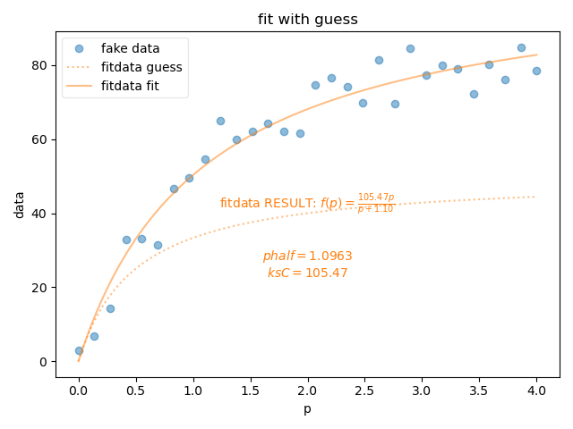

Note
Click here to download the full example code
Fitting Data (Nonlinear + Symbolic)¶
This example creates fake data with noise then fits the exponential with the fitdata function.
Out:
c:\users\johnf\notebook\pyspecdata\pyspecdata\core.py:2680: UserWarning: marker is redundantly defined by the 'marker' keyword argument and the fmt string "o" (-> marker='o'). The keyword argument will take precedence.
retval = myplotfunc(*plotargs,**kwargs)
c:\users\johnf\notebook\pyspecdata\pyspecdata\core.py:2680: UserWarning: linestyle is redundantly defined by the 'linestyle' keyword argument and the fmt string ":" (-> linestyle=':'). The keyword argument will take precedence.
retval = myplotfunc(*plotargs,**kwargs)
----- Results for fitdata: -----
output for fitdata: {'phalf': 1.096308584085903, 'ksC': 105.47247235550563}
latex for fitdata: $f(p)=\frac{105.47 p}{p + 1.10}$
from pyspecdata import *
import sympy as sp
# {{{ this is the contents of pylab.py -- works
# need to go through and figure out which lines
# are actually needed and which are not
# -- I have already stripped out some
from lmfit import Parameters, minimize
from matplotlib.pyplot import figure, subplot, show, xlim, ylim, plot, gca
from numpy import * # I think it wasn't importing from numpy b/c it seems we're inside sphinx
def list_symbs(f):
# {{{ this is just to show all the parameters
list_symbs = []
for j, k in f.output().items():
s_repr = sp.latex(sp.Symbol(j))
list_symbs.append(f"${s_repr} = {k:0.5g}$")
list_symbs = "\n".join(list_symbs)
# }}}
return list_symbs
# }}}
fl = figlist_var()
# {{{creating a fake data recovery curve
p = nddata(r_[0:4:30j], "p")
fake_data = 102 * p / (1.0 + p)
fake_data.add_noise(5.0)
# }}}
# {{{ define the expression of the functional form once, and then use it
# for both types of classes
# ksC is k_σ sₘₐₓ C
ksC, phalf, p = sp.symbols("ksC phalf p", real=True)
functional_form = ksC*p/(phalf+p)
# }}}
with figlist_var() as fl:
fl.next("fit with guess")
fl.plot(fake_data, "o", alpha=0.5, label="fake data")
# {{{ lmfitdata method
lmfitdata_instance = lmfitdata(fake_data)
lmfitdata_instance.functional_form = functional_form
lmfitdata_instance.set_guess(
phalf=dict(value=0.5, min=0, max=5),
ksC=dict(value=50, min=0, max=500),
)
# }}}
fl.next("fit with guess")
lmfitdata_instance.settoguess()
guess_line = fl.plot(
lmfitdata_instance.eval(100), ":", alpha=0.5, label="fitdata guess"
)
thiscolor = guess_line[0].get_color()
lmfitdata_instance.fit()
print("-" * 5, "Results for fitdata:", "-" * 5)
print("output for fitdata:", lmfitdata_instance.output())
print("latex for fitdata:", lmfitdata_instance.latex())
this_ls = "-"
fit_line = fl.plot(
lmfitdata_instance.eval(100),
ls=this_ls,
color=thiscolor,
alpha=0.5,
label="fitdata fit",
)
ax = gca()
x_text, y_text = 0.5,0.5 # where we want the text to go
text(
x_text,
y_text,
"fitdata RESULT: %s" % lmfitdata_instance.latex(),
ha="center",
va="center",
color=thiscolor,
transform=ax.transAxes,
)
text(
x_text,
y_text,
(3 * "\n") + list_symbs(lmfitdata_instance),
ha="center",
va="top",
size=10,
color=thiscolor,
transform=ax.transAxes,
)
Total running time of the script: ( 0 minutes 0.369 seconds)